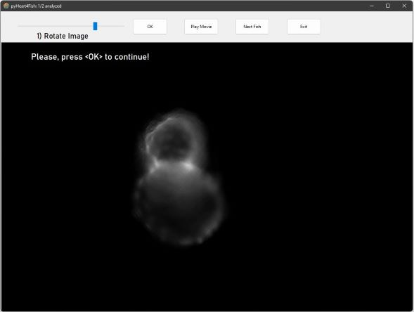
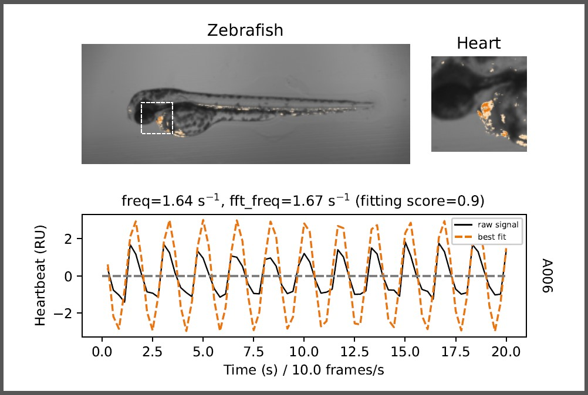
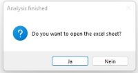

V. Vedder and T. Reinberger et al.
"pyHeart4Fish: Chamber-specific heart phenotype quantification of zebrafish in high-content screens"
Front. Cell Dev. Biol. Sec. Molecular and Cellular Pathology , Volume 11 - 2023 | doi: 10.3389/fcell.2023.1143852
The pyHeart4Fish has been developed and tested in Windows 11!
If not done yet download
and install python >3.7 on your computer, please! Check ADD TO PATH when asked.
pyHeart4Fish_scripts foldercmd in Windows search field)cd C:\Users\<YOUR_USERNAME>\Desktop\pyHeart4Fish_scriptspip install -r requirements.txt pip install -r requirements_for_installation.txtinstall_pyHeart4Fish.pyinstall_pyHeart4Fish.py from GitHub/ToReinberger/pyHeart4Fishinstall_pyHeart4Fish.py > double click OR right click > open with PythonpyHeart4Fish icon (Installation option 1)pyHeart4Fish_scripts/heart_beat_GUI.py > open with python (Installation option 2)python <YOUR_STORAGE_PATH>/pyHeart4Fish_scripts/heart_beat_GUI.py (Installation option 2)heart_beat_GUI.py in a Python IDE of your choice (e.g., Pycharm, KITE, Notepad++)pyHeart4Fish_exe/heart_beat_GUI.exe (Installation option 3)This Python script opens the main window of pyHeart4Fish (see Step 2)
Please check experimental requirements before using pyHeart4Fish:
Accepted file formats:
Test data can be found on OneDrive.
Please unzip data sets before analysis!
| Input folder: | > Contains all movie-files/ images in sub-folders for one project/ experiment > Choose file folder and click Open Folder |
| Output folder: |
> Is automatically created : Input + "_Results" > Or click Change output to define a desired output folder > Contains all configuration files, raw data, plots and excel sheets (see above) |
| Frames per second: | > Should be > 15 for optimal results for optimal results, but 10 f/s can be sufficient |
| Skip images: | > Default 0, (0 - 10 possible) > 1 = Every second frame is skipped > Might accelerate the analysis as the number of images is cut in half > Use only if frame rate is high enough! |
| Pixel size: | > Please check the size of a pixel at your microscope; in your metadata; or use a scale and ImageJ/Fiji to determine your pixel size [µm] > A wrong pixel size will give wrong heart size etc. > Relative values will still apply |
| Cut movie (sec): | > The length of the movie should be at least 10 s > Ensures that all movies have the same length |
| File format: | > See Input data types |
| Overwrite data: | > If data needs to be re-analyzed > If unselected all analyzed hearts will be skipped in the project folder |
| Acquisition mode: | > Immunofluorescence (chamber-specific): Fluorescent heart is required and 10x magnification is desired > Bright field (only heartbeat): The script is optimized for bright field movies /series of frames of whole zebrafish in sagittal position (eyes included) |
By clicking Start, the method StartConfigs.run_program is executed which iteratively
executes heart_beat_GUI_only_one_fish_multiprocessing.py
or heart_beat_GUI_only_one_fish_multiprocessing.py
for each zebrafish and combines all Excel sheets once all zebrafish have been analyzed.
In the bright field acquisition mode, all zebrafish will be analyzed automatically.
This will take a while, e.g., 20 to 30 min for 40 zebrafish depending on the computer performance.
Rotate the heart for chamber-specific fluorescent acquisition mode using the slider to position ventricle
at the top and atrium at the bottom. Click OK to continue.
You can orientate the fish in another direction.
However, the tool will later automatically re-rotate the video for analysis!

To distinguish between background and heart define 1) atrium and 2) ventricle area by Drag-and-Draw.
Click OK to start the analysis of all frames / images.
Best results yields a rough selection around respective heart chambers (see image below).
Make sure that the border enclose all part of the atrium!

The first processed image is shown after the complete analysis.
Press Yes to show heart beat curves.
The number of analyzed fish hearts is shown in the left top corner (here: 1/2 analyzed)


| freq: | > Frequency / rate of heartbeats derived from fitted sine function (red dotted line) |
| fft_freq: |
> Frequency / rate of heartbeats derived from fast fourier transformation (FFT) |
| phase shift: | > Shift between atrium and ventricle sine function > A very small or very high phase shift can be a sign of arrhythmia / AV-block but 10 f/s can be sufficient |
| arrhythmia score: | > The lower this value, the more regular the heartbeat. > A value >0.7 is a sign of arrhythmia |
| av-block score: | > The absolute difference of all frequencies (freq and fft_freq) between atrium and ventricle > A value >0.5 is a sign for a conduction defect or atrial/ ventricle tachycardia or bradycardia |

Once all fish hearts have been analyzed you can choose to open the summary Excel sheet for all fish

Output parameters:
| Project_name | > Name of the project folder |
| Condition |
> File name of of movie / image folder |
| Number_images | > Number of images/ frames analyzed |
| Heart_size (µm^2) | > Size of the heart (atrium + ventricle) |
| x_distance (µm) | > Maximal horizontal distance |
| y_distance (µm) | > Maximal vertical distance |
| Round_shape | > Derived from x_distance-y_distance ratio (1 = round, 0 = stretched) |
| Atrium/ ventricle maximal dilated or maximal contracted chamber area | > Minimal area = contraction; maximal area = dilatation |
| Atrium/ ventricle relative contractility (%) | > Maximal difference in area normalized to maximal chamber area |
| Atrium/ ventricle ejection fraction (µm^3) | > Absolute change in volume (cylinder approximation) |
| Atrium/ ventricle ejection fraction (µm^3) | > Absolute change in volume (cylinder approximation) |
| Atrium/ ventricle fit_score | > Correlation coefficient between raw data and fitted curve (red line) |
| Atrium/ ventricle Auto_Corr | > Auto-Correlation coefficient for raw data > The higher the value, the more regular the heartbeat |
| Freq, Freq_fft, phase_shift, arrhythmia score, av_block_score | > see above |
install_pyHeart4Fish.py does not run to the end or the desktop icon is missing, pyshortcuts first by typing pip install pyshortcuts in Windows console install_pyHeart4Fish.pyrequirements.txt separately from
(see GitHub/ToReinberger/pyHeart4Fishpip install <NAME_OF_PACKAGE> in Windows consoleNext Fish as an error has occurredPlease contact tobias.reinberger@uni-luebeck.de to report any issues
BSD 2-Clause License
Copyright (c) 2022, Tobias Reinberger All rights reserved.
Cite as ...
Redistribution and use in source and binary forms, with or without modification, are permitted provided that the following conditions are met:
THIS SOFTWARE IS PROVIDED BY THE COPYRIGHT HOLDERS AND CONTRIBUTORS "AS IS" AND ANY EXPRESS OR IMPLIED WARRANTIES, INCLUDING, BUT NOT LIMITED TO, THE IMPLIED WARRANTIES OF MERCHANTABILITY AND FITNESS FOR A PARTICULAR PURPOSE ARE DISCLAIMED. IN NO EVENT SHALL THE COPYRIGHT HOLDER OR CONTRIBUTORS BE LIABLE FOR ANY DIRECT, INDIRECT, INCIDENTAL, SPECIAL, EXEMPLARY, OR CONSEQUENTIAL DAMAGES (INCLUDING, BUT NOT LIMITED TO, PROCUREMENT OF SUBSTITUTE GOODS OR SERVICES; LOSS OF USE, DATA, OR PROFITS; OR BUSINESS INTERRUPTION) HOWEVER CAUSED AND ON ANY THEORY OF LIABILITY, WHETHER IN CONTRACT, STRICT LIABILITY, OR TORT (INCLUDING NEGLIGENCE OR OTHERWISE) ARISING IN ANY WAY OUT OF THE USE OF THIS SOFTWARE, EVEN IF ADVISED OF THE POSSIBILITY OF SUCH DAMAGE.